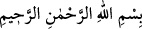

NEREDEYSE KENDİNE
KIYACAKSIN
Rahmân ve Rahîm (olan) Allâh’ın adıyla.
1. Tâ. Sîn. Mîm.
2. Bunlar apaçık Kitab’ın âyetleridir.
3. Onlar iman etmiyorlar diye neredeyse kendine kıyacaksın.
4. Biz dilesek, onların üzerine gökten bir mucize indiririz de, ona boyunları eğilip
kalır.
5. Kendilerine, Rahmân’dan hiçbir yeni öğüt gelmez ki, ondan yüz çevirmesinler.
6. Üstelik (ona) “yalandır” dediler; fakat alay edip durdukları şeylerin haberleri
yakında onlara gelecektir.
7. Yeryüzüne bir bakmazlar mı! Orada her güzel çiftten nice bitkiler yetiştirdik.
8. Şüphesiz bunlarda (Allah’ın kudretine) bir nişâne vardır; ama çoğu iman
etmezler.
9. Şüphe yok ki Rabbin, mutlak galip ve engin merhamet sahibidir.
“Tâ. Sîn. Mîm.” “__WORD__ sözü, sûrelerin başlarındaki bütün mukattaa
harflerini kendisinde toplar. Bu harfler hakkında müfessirlerin söyledikleri ilk söz,
“Murâdını en iyi Allah bilir” sözüdür. Çünkü bu harfler gizli sırlardandır. Nitekim
Riyâzu’l-ezkâr’da belirtildiği üzere Ebû Bekir Sıddîk (r.a.) der ki: “Her kitabın bir
sırrı vardır. Kuran’ın da sırrı, mukattaa harflerindedir.” Sırlarla ve hakîkatlarla ilgili
mânâları ancak Allah ve Allah’ın kendilerini muttalî kıldığı ilimde yüksek pâyeye